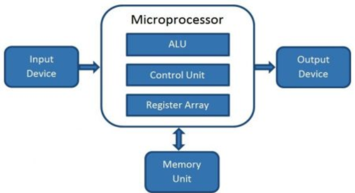

- A Microprocessor is an important part of a computer architecture without which you will not be able to perform anything on your computer.
- It is a programmable device that takes in input performs some arithmetic and logical operations over it and produces the desired output.
- In simple words, a Microprocessor is a digital device on a chip that can fetch instructions from memory, decode and execute them and give results.
- A Microprocessor takes a bunch of instructions in machine language and executes them, telling the processor what it has to do.
- Microprocessor performs three basic things while executing the instruction:
- It performs some basic operations like addition, subtraction, multiplication, division, and some logical operations using its Arithmetic and Logical Unit (ALU). New Microprocessors also perform operations on floating-point numbers also.
- Data in microprocessors can move from one location to another.
- It has a Program Counter (PC) register that stores the address of the next instruction based on the value of the PC, Microprocessor jumps from one location to another and takes decisions.
- A microprocessor also has lines for controlling the input and output devices. These devices could be an electric motor or a display lamp or other electronic devices.
- A typical Microprocessor structure looks like this : 
1. Introduction To Microprocessor:
2. Differences in Microcomputer, Microprocessor and Microcontroller:
2.1 Microcomputer :
- A microcomputer can be defined as a small sized, inexpensive, and limited capability computer.
- It has the same architectural block structure that is present on a computer.
- Due to their lower costs, individuals can possess them as their personal computers.
- Because of mass production, they are becoming still cheaper.
- They are also capable of performing floating point arithmetic operations.
- With the advent of increasingly powerful microprocessors, microcomputers became popular in the 1970s and1980s.
2.2 Microprocessor:
- The processor on a single chip is called a Microprocessor which can process micro-instructions.
- Instructions in the form of 0's and 1's are called micro-instructions.
- The microprocessor is the CPU part of a microcomputer, and it is also available as a single integrated circuit.
- Thus as main components, the microprocessor will have theControl Unit (CU) and the Arithmetic Logic Unit (ALU) of a microcomputer.
- An example is Intel 8085 microprocessor.
- In the present-day world, Microprocessors are extensively used. Before the microprocessor's invention, the logic design was done by hardware using gates, flip-flops, etc.
- Some of the applications of microprocessors are Business applications such as desktop publishing, industrial applications like power plant control and Measuring instruments such as multimeter.
2.3 Microcontroller :
- A Microcontroller is a small and low-cost microcomputer, which is designed to perform the specific tasks of embedded systems like displaying microwave information, receiving remote signals etc.
- The general microcontroller consists of the processor, the memory (RAM, ROM, EPROM), Serial ports, peripherals (timers, counters) etc.
- Types of Microcontrollers :
Bit :
8-bit microcontroller :
It is a type of the microcontroller is used to execute arithmetic and logical operations like addition, subtraction, multiplication division, etc. For example, Intel 8031 and 8051.16-bit microcontrollers :
This type of the microcontroller is used to perform arithmetic and logical operations where higher accuracy and performance is required. Forexample, Intel 8096.32-bit microcontrollers
This type of the microcontroller is generally used in automatically controlled appliances.For example automatic operational machines, medical appliances, etc.Memory :
External memory microcontroller :
This type of microcontroller is designed in such a way that they do not have a program memory on the chip. Hence, it is named as external memory microcontroller. For example Intel 8031 microcontroller.Embedded memory microcontroller :
This type of microcontroller is designed in such a way that the microcontroller has all programs and data memory, counters and timers, interrupts, I/O ports are embedded on the chip. For example Intel 8051 microcontroller.Instruction Set :
CISC(complex instruction set computer) :
It allows the user to insert a single instruction as an alternative to many simple instructions.RISC(Reduced Instruction Set Computers) :
It reduces the operational time by shortening the clock cycle per instruction
Difference between RISC and CISC:
| RISC | CISC |
|---|---|
| Stands for Reduced instruction set computer | Stands for complex instruction set computer |
| Simple instruction set | Complex instruction set |
| Consists of Large number of registers. | Less number of registers |
| Larger Program | Smaller program |
| More RAM usage | Little Ram usage |
| Fixed length instructions | Variable length instructions |
| Simple addressing modes | Variety of addressing modes |
Difference between Microprocessor and Microcontroller:
| Microprocessor | Microcontroller |
|---|---|
| Centre of a computer system | Centre of embedded system |
| Memory and I/O components are external to it | Memory and I/O components are internal to it |
| Higher cost | Lower cost |
| Less number of registers | More number of registers |
| Requires more instructions | Requires less instructions |
3. An n-bit Microprocessor:
- A microprocessor is called an n-bit microprocessor depending on size of internal data bus.
- n-bit Microprocessor will have registers that can hold n-bit data.
- An n-bit Microprocessor can also be used to perform operations on larger data. However such operations will generally be slower than n-bit operations.
4. Evolution of microprocessors:
- We can categorize the microprocessor according to the generations or according to the size of the microprocessor :
- The first generation microprocessors were introduced in the year 1971-1972 by Intel Corporation.
- It was named Intel 4004 since it was a 4-bit processor.
- It was a processor on a single chip.
- It could perform simple arithmetic and logical operations such as addition, subtraction, Boolean OR and Boolean AND.
- I had a control unit capable of performing control functions like fetching an instruction from storage memory, decoding it, and then generating control pulses to execute it.
- The second generation microprocessors were introduced in 1973 again by Intel.
- It was a first 8 - bit microprocessor which could perform arithmetic and logic operations on 8-bit words.
- It was Intel 8008, and another improved version was Intel 8088.
- The third generation microprocessors, introduced in 1978 were represented by Intel's 8086, Zilog Z800 and 80286, which were 16 - bit processors with a performance like minicomputers.
- Several different companies introduced the 32-bit microprocessors, but the most popular one is the Intel 80386.
- From 1995 to now we are in the fifth generation.
- After 80856, Intel came out with a new processor namely Pentium processor followed by Pentium Pro CPU, which allows multiple CPUs in a single system to achieve multiprocessing.
- Other improved 64-bit processors are Celeron, Dual, Quad, Octa Core processors.
First Generation (4 - bit Microprocessors) :
Second Generation (8 - bit Microprocessor) :
Third Generation (16 - bit Microprocessor) :
Fourth Generation (32 - bit Microprocessors) :
Fifth Generation (64 - bit Microprocessors) :
5. Basic Terms used in Microprocessor:
Instruction Set- The group of commands that the microprocessor can understand is called Instruction set. It is an interface between hardware and software.
Bus- Set of conductors intended to transmit data, address or control information to different elements in a microprocessor. A microprocessor will have three types of buses, i.e., data bus, address bus, and control bus.
IPC (Instructions Per Cycle)- It is a measure of how many instructions a CPU is capable of executing in a single clock.
Clock Speed- It is the number of operations per second the processor can perform. It can be expressed in megahertz (MHz) or gigahertz (GHz). It is also called the Clock Rate.
Bandwidth- The number of bits processed in a single instruction is called Bandwidth.
-
Word Length - The number of bits the processor can process at a time is called the word length of the processor. 8-bit Microprocessor may process 8 -bit data at a time. The range of word length is from 4 bits to 64 bits depending upon the type of the microcomputer.
-
Data Types- The microprocessor supports multiple data type formats like binary, ASCII, signed and unsigned numbers.
6. Working of Microprocessor:
The microprocessor follows a sequence to execute the instruction: Fetch, Decode, and then Execute.
Initially, the instructions are stored in the storage memory of the computer in sequential order.
The microprocessor fetches those instructions from the stored area (memory), then decodes it and executes those instructions till STOP instruction is met.
Then, it sends the result in binary form to the output port.
Between these processes, the register stores the temporary data and ALU (Arithmetic and Logic Unit) performs the computing functions.
7. Features of Microprocessor:
Low Cost- Due to integrated circuit technology microprocessors are available at very low cost. It will reduce the cost of a computer system.
High Speed - Due to the technology involved in it, the microprocessor can work at very high speed. It can execute millions of instructions per second.
Small Size - A microprocessor is fabricated in a very less footprint due to very large scale and ultra large scale integration technology. Because of this, the size of the computer system is reduced.
Versatile - The same chip can be used for several applications, therefore, microprocessors are versatile.
Reliable- Since microprocessors use semiconductor technology, therefore, the failure rate is very less. Hence it is very reliable.
Portable - Due to the small size and low power consumption microprocessors are portable.